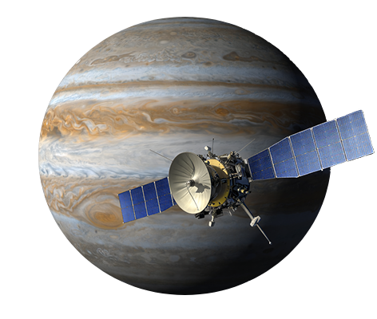
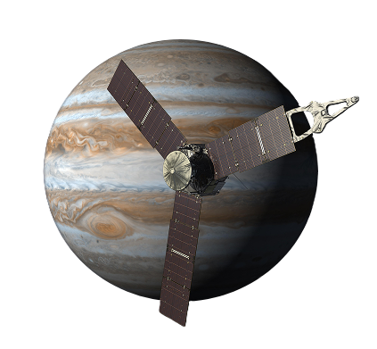

Clipper

Den første sonden som er utformet for å studere Jupiters måne Europa for å undersøke tegn til liv. Clipper skal være fremme ved Jupiter i april 2030 og tilbringe 4 år i kretsløp rundt planeten. Banen vil endres etter hvert som Jupiters måner passerer. På vei til Jupiter passerte sonden Mars i mars 2025 og vil passere Jorden i desember 2026, for å opparbeide hastighet for å nå ut til Jupiter.
Juno

Juno ble skutt opp i 2011 og har gått i polarbane rundt Jupiter siden juli 2016. Sondens ni instrumenter undersøkte om Jupiter hadde en fast kjerne, kartla planetens intense magnetfelt, registrerte mengden av vann og ammoniakk i den dypere del av atmosfæren og observerte polarlyset. Juno sitt oppdrag ble avsluttet i 2025, men flere komponenter fungerer fortsatt.